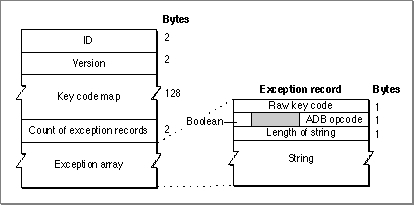

Key-Map Resource (Type 'KMAP')
The key-map resource (resource type'KMAP') is used for converting the raw key codes produced by a keyboard's microprocessor into hardware-independent virtual key codes. There is one key-map resource per physical keyboard on a Macintosh; it belongs to the Operating System, not to any script system.The key-map resource ID number equals the ID number of the type of keyboard it is associated with. See Table C-1 on page C-4. If a matching key-map resource cannot be found for the keyboard in use, the Operating System substitutes the
'KMAP'resource whose ID is 0; on all Macintosh systems later than the Macintosh Plus, the key-map resource with ID = 0 is in ROM.The key-map resource contains a 128-byte table that provides a one-to-one mapping of raw key codes to virtual key codes--the first byte contains the virtual key code for a raw key code of $00, the second for $01, and so forth. The table is followed by an array of exceptions. The high bit of the byte containing the virtual key code signals an exception entry in the exception array. (Virtual key codes themselves are only 7 bits long.)
- Note
- Most current keyboards use the key-map resource with ID = 0. However, keyboard types 2 and 5, for example, require their own key-map resources.
The exception array lets the device driver initiate communication with the device, usually to perform a state change--for example, to send codes to the keyboard that instruct it to turn on lights when a given key such as Caps Lock is down. The exception array begins with a 2-byte record count followed by that many records. The format of the key-map resource and its exception array is shown in Figure C-4.
Figure C-4 Format of the key-map resource

The elements in the resource have these meanings:Each exception record has these elements (see also Figure C-4):
- ID. The resource ID for this particular key-map resource.
- Version. The version number of this key-map resource format.
- Key code map. A 128-byte table that contains virtual key codes. At each byte offset into the table, the entry is the virtual key code (plus possibly an exception entry flag) for the raw key code whose value equals that offset.
- Count of exception records. The number of entries in the exception array.
- Exception array. An array of exception records, which map raw key codes to communication instructions.
The following is an example of the exception array used to turn the Caps Lock light of the Apple Extended Keyboard II on and off, to match the state of the Caps Lock key.
- A raw key code.
- One byte containing the following elements:
- A Boolean (
XorornoXor) field that determines whether to instruct the driver to invert the state of the key instead of using the state provided by the hardware.- Filler (3 bits in length).
- The ADB opcode, an instruction to the keyboard to perform some task. ADB opcodes are described in Inside Macintosh: Devices.
- A variable length Pascal data string that is passed to the ADB op trap along with the ADB opcode. The first byte in the string is the length byte.
{ $39, noXor, $E, "\$00\$02"; $B9, noXor, $E, "\$00\$02"; }
- Note
- Do not change the key-map resource. Everything your application needs to support any kind of text input is in the keyboard-layout and key-remap resources. You need to work with the key-map resource only if you are making your own keyboard.
Subtopics
- Apple Extended Keyboard
- Reassigning Right-Hand Key Codes
- Other Hardware Dependencies
- Virtual Key Codes for Non-ADB Keyboards